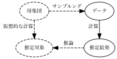
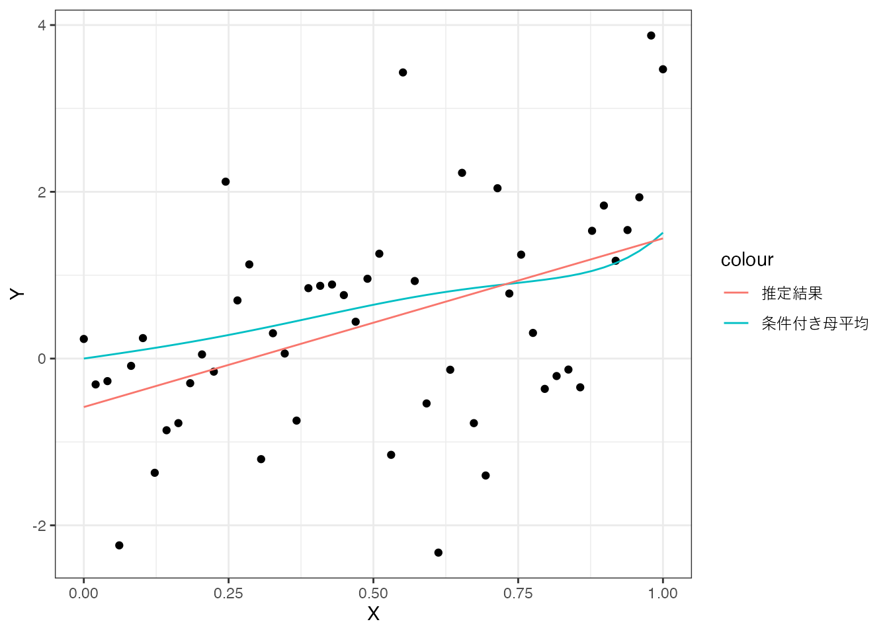
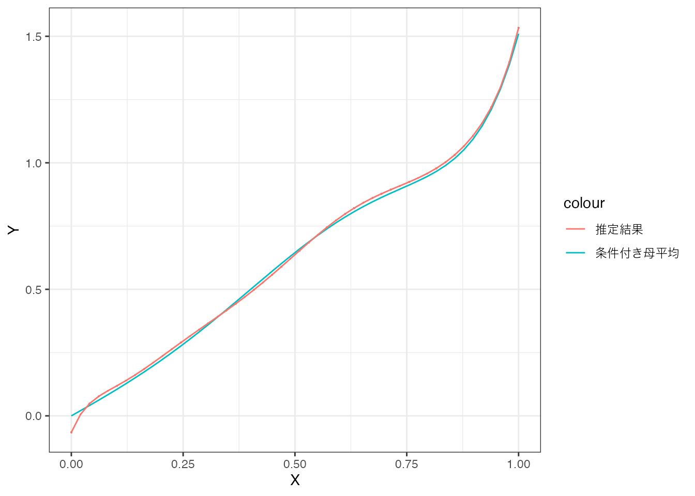

library(tidyverse)
data("CPSSW04", package = "AER")
lm(earnings ~ age, CPSSW04)
Call:
lm(formula = earnings ~ age, data = CPSSW04)
Coefficients:
(Intercept) age
3.3242 0.4519 平均値やOLSの結果は、計算に用いるデータによって異なります。 例えば、1947年に実施された第１回目の労働力調査と2025年に行われた調査では、平均賃金が大きく異なるでしょう。 これは1947年と2025年では、社会状況が大きく異なるので、当然の結果と考えられます。
では全く同じ社会を対象とした調査を、複数の研究チームが行った場合に、同じ平均賃金が算出されるでしょうか？ もし同じ結果が得られないのでは、分析結果には、「客観性がなく信用できない」とも考えられます。 このような場合、分析結果をどのように受け取れば良いでしょうか？
以上の問題は、推定問題と呼ばれ、データ分析における中心的な課題の一つです。
推定対象と推定結果を明確に区別する
推定対象を推論するツール、信頼区間を理解する
推定問題を考える土台となる枠組みとしては、頻度論とベイズ論が有名です。 本ページでは、頻度論に基づく議論を紹介します。
まずは、以下の思考実験を考えてください。
日本全国に、「2025年の日本の労働市場」を分析する研究チームが、大量に組織されました。各チームは同じ手順に基づき、平均賃金を計算します。ただしデータの収集は、各チームが独立して行います。
果たして、各チームは同じ結論にたどり着くでしょうか？
もし全てのチームが同じデータと同じコードを使えば、コーディング・ミスなどがない限り同じ結果になるはずです。 ところが、各チームが電話・ネット調査などでそれぞれが独自にデータを集めた場合、調査対象の対象となった回答者の違いから、得られるデータが異なり、結果も変わる可能性があります。
この思考実験の結果を順序立てて想像するために、いくつかの理論的な概念を導入します。
次の2つを区別することが重要です:
推定結果（estimate）：データから実際に計算される値
推定目標（parameter of interest/estimand）：推定の対象となる“真の値”
たとえば、CPSSW04データから計算される平均所得は、あくまで「推定結果」であり、「全米の平均所得」という推定目標に近づくことを期待して計算されます。
推定結果と推定目標の関係性を明確にするために、母集団とサンプルングという概念を導入します。
母集団 (Population) とは、推定の対象となる集団のことです。 Important 3.1 における母集団は「2025年の労働者」、CPSSW04では、「2004年のアメリカの全世帯」が妥当な母集団でしょう。
母分布は、母集団における変数の分布です。 本ページでは、データに含まれる変数について、母集団全員を調査し、計算された分布であるとイメージしてください。
例えばCPSSW04の母集団である2004年のアメリカの全世帯が観察できれば、同年の 特定の \([\) 収入、学位、性別、年齢 \(]\) が、全人口に占める割合が計算できるはずです。
以下では、「分析者は母集団を直接観察できず、母分布を実際に計算することは不可能である」、という状況を想定します。 そして、直接知ることができない母分布やその特徴を、データから推定することを試みます。
本ページでは、母分布そのものではなく、母分布の特徴を推定する方法を紹介します。 推定の対象となる母分布の特徴を、推定目標と呼びます。 代表的なものとしては、母分布から計算された平均値およびOLSの結果があります。
データにおける分布と同様に、母分布からも平均値や条件付き平均値を計算できます。 このような母集団における平均値を、母平均と呼びます。
例えば、母集団における25才の平均所得は以下のように計算できます。
\[ 25才の条件付き母平均 \] \[ = 1\times 25才における「earningsが1」の条件付き母分布 \] \[ + 2\times 25才における「earningsが2」の条件付き母分布 \] \[ +... \]
本スライドでは、母分布から計算されるOLSの結果を推定目標とします。 このような推定目標を母集団におけるOLS推定値(Population OLS)と呼びます。
例えば、賃金と年齢の関係性を捉えるために、以下の母集団における平均二乗誤差を最小化する線型モデル (\(\beta_0 + \beta_1\times age\)) をPopulation OLSとして定義できます
\[ (25才の母平均 - (\beta_0+\beta_1\times 25))^2\times 25才の母分布 \] \[ + (26才の母平均 - (\beta_0+\beta_1\times 26))^2\times 26才の母分布 \] \[ +... \]
これらはすべて、実際には観察できない仮想的な計算結果です。 この結果をデータから推定することを目指します。
データは、何らかの方法で選ばれた事例の集まりであると想定します。 この事例を選ぶ過程を、サンプルング (sampling) と呼びます。
母集団について推測するためには、データと母集団の関係について何らかの仮定を置く必要があります。 特に、母集団の事例をどれだけ偏りなくサンプリングできているのかは、分析の信頼性に大きく影響します。
最も重要な仮定は、ランダムサンプリングです。
本ページでは、分析に用いるデータはランダムサンプルングを満たすことを想定します。
推定結果（estimate）とは、データから計算される値のことです。 この推定結果は、推定対象（母集団上での真の値）に近い値であることが期待されます。
推定結果を計算する手順のことを、推定方法（estimator）と呼びます。
本節で登場した重要な概念と仮定を整理すると、次のようになります。
母集団: 推定対象となる集団
サンプルング: 母集団から事例を収集する手順
データ: サンプリングされた事例の集団
推定結果: データから計算される結果 (推定対象に近い値であることが期待される)
推定方法: データから推定結果を計算する具体的な計算方法
これらの関係は、以下の図にまとめられます：

図中の実線は、データの分析者が実際に観察・操作できる要素を、点線は想像上の操作や概念を表しています。 例えば、母集団から推定対象を計算する作業を、分析者が実際に行うことはできません。 なぜならば、母集団を直接観察することができないためです。
ここまでの枠組みを用いると、Important 3.1 の思考実験の結果は以下のように整理できます。
母平均やPopulation OLSは、以下の一般的な推定方法が利用できます1。
母集団上での仮想的な計算結果 として、推定対象を定義する
同じ計算をデータ上で行った結果を、推定結果とする
この推定方法は、以下の性質から正当化できます。
もしデータに代表性があり、かつ事例数が無限大であれば、データから算出したOLSの結果とPopulation OLSは一致する。
一致性からは、データが増えれば増えるほど、推定結果は推定目標に近づくことが期待できます。
ただし、この議論は「母集団において平均値やOLSの結果が計算できる」ということを、前提にしていることに注意してください。 例えば、母分布が「特殊な」場合、母平均が無限大になり、計算できない場合があります2。 またPopulation OLSについては、母集団において多重共線性 が存在する場合、計算は不可能です。 そのため、多重共線性のない定式化を用いて、Population OLS を定義する必要があります。
一致性は、推定方法 Important 3.3 を正当化する重要な性質です。 しかしながら、実際のデータ分析においては、それほど実用的な性質ではありません。 なぜならば、Population OLSとデータ上でのOLSが一致するためには、無限大の事例数 が必要となるからです。 いうまでもなく無限大の事例数を持つデータは存在しません。 言い換えると、実際のデータ分析では、推定結果と推定目標は”乖離している”と想定すべきです。
具体的な例から考えてみます。
library(tidyverse)
data("CPSSW04", package = "AER")
lm(earnings ~ age, CPSSW04)
Call:
lm(formula = earnings ~ age, data = CPSSW04)
Coefficients:
(Intercept) age
3.3242 0.4519 以上の結果は、データ上でのOLSでは、ageのパラメタは0.4519であることが確認できます。 一致性から、もしCPSSW04がランダムサンプルングの仮定を満たし、事例数が無限大であれば、「Population OLS におけるageのパラメタも0.4519である」という結論は必ず正しいものとなります。 ところが実際の事例数は、7986 であり、無限ではありません。 このため「Population OLS におけるageのパラメタも0.4519である」は、ほぼぼ間違った結論となります。
ここまでの議論から、Important 3.1 の思考実験の結果は以下のように整理できます。
各研究チームは、ランダムサンプリングにより、データを集めたとする
データの事例数が無限大あれば、データから得られるOLSの結果は、常にPopulation OLSと一致する
現実的な事例数のもとでは、データから得られるOLSの結果は、常にPopulation OLSから乖離
ほぼほぼ間違った結論ではなく、正しい結論を示すことは可能でしょうか？ データ分析においては、確実に正しい結論を示すことは、事実上不可能です。 このため多くのデータ分析では、ほぼほぼ正しい結論を示すことを目指します。 このようなほぼほぼ正しい結論を示すプロセスは、統計的推論と呼ばれます。
統計的推論に活用できるツールは、さまざまなものがあります。 代表的なものとして、信頼区間を紹介します。
推定対象を一定の確率で含むと考えられる、データから計算される区間
s- 推定対象を含む確率は、信頼確率と呼ばれ、研究者が指定する
Rにおいて、信頼区間を計算する方法は複数存在します。 例えばestimatrパッケージのlm_robust関数を用いれば、以下の仮定のもとで、信頼区間を計算します。
データはランダムサンプルングされている
事例数は十分にある3
極端なハズレ値がない
例えば、以下のコードから、reformの平均値について信頼区間を計算できます。 levelには、 信頼水準 (信頼区間が推定対象を含まむ確率)を指定します。 省略すれば、自動的に \(0.95\) が指定され、 \(95\%\) 信頼区間が計算されます。
estimatr::lm_robust(earnings ~ age, CPSSW04) Estimate Std. Error t value Pr(>|t|) CI Lower CI Upper
(Intercept) 3.3241841 0.9657404 3.442109 5.801562e-04 1.4310807 5.2172874
age 0.4519313 0.0329688 13.707847 2.737848e-42 0.3873039 0.5165588
DF
(Intercept) 7984
age 7984以上の結果から、「Population OLSにおけるageは、概ね \(0.387\sim 0.517\) である」という主張を行うことができます。
ここまでの議論から、Important 3.1 の思考実験の結果は以下のように整理できます。
各研究チームは、ランダムサンプリングにより、十分な事例数があるデータを集め, \(95\%\) 信頼区間を計算したとする
モデルが複雑すぎると、推定において深刻な問題が生じることがあります。 複雑なモデルのパラメータを高い精度で推定するためには、十分な数の観測事例が必要になるためです。 このためデータ数が限られている場合、複雑なモデルを推定すると、推定精度が大幅に低下し、ミスリードな推定結果を導くおそれがあります。
ここでは、単純な数値例を用いてこの問題を確認してみます。
以下のような複雑な条件付き母平均を想定します4。
\[ E[Y\mid X] = X + 0.1\times X^2 + 2\times X^3 + 0.01\times X^4 + 5 \times x^5 \] \[ 0.1 \times x^6 + 3 \times x^7 + 0.1 \times x^8 + 0.1 \times x^9 + 0.1 \times x^{10} \tag{3.1}\]
条件付き母平均とこの想定に基づいてランダム・サンプルングされた50事例のデータを図示すると、以下のようになります。

赤線が条件付き母平均、黒点がデータを表します。
まずは、単純な線型モデル \((\beta_0 + \beta_1\times X)\) を推定してみます。
fixest::feols(
Y ~ X,
data
)この推定結果と条件付き母平均を比較すると、以下のようになります。

この図からわかるように、単純なモデルでは複雑な母平均を捉えることができず、推定結果と母平均に乖離が生じています。
次に、Equation 3.1 のような複雑な条件付き母平均を想定し、以下のような複雑なモデルを推定してみます。
fixest::feols(
Y ~ poly(X,10), # Xの10乗までがモデルに導入されます。
data
)この推定結果と条件付き母平均を比較すると、以下のようになります。
複雑なモデルの方が、条件付き母平均に近づくように思えるかもしれませんが、実際には母平均との乖離がむしろ拡大していることがわかります。 これは、少ないデータ（50事例）で複雑なモデルを推定したため、パラメータの推定精度が著しく低下したことを示しています。
では、同じ複雑なモデルを、十分なデータ（5万事例）で推定した場合はどうなるでしょうか。

この場合、推定結果は条件付き母平均とほぼ一致しており、十分なデータがあれば、複雑なモデルでもOLSによって高精度な推定が可能であることが確認できます。
この数値例からわかるように、複雑なモデルを用いる際には、十分なデータがあるかどうかを慎重に検討する必要があります。